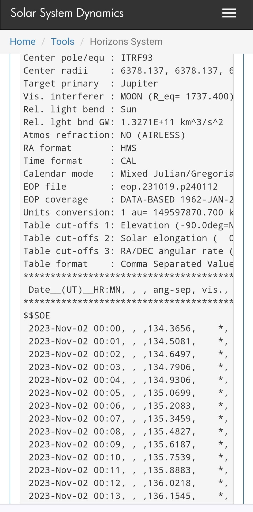
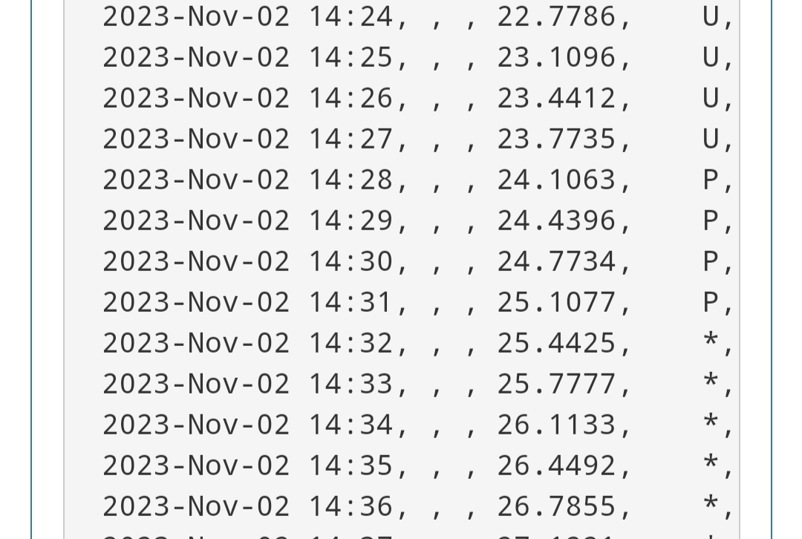

Roemer experiment (1676)
Ole Roemer, a Danish astronomer, measured the time it took for light to travel from Jupiter to Earth by observing the eclipses of Jupiter's moon Io. He noticed that the time between eclipses of Io varied depending on the position of Earth in its orbit around the Sun. By measuring these variations, he was able to estimate the speed of light .
Calculating latitude using Io eclipses
The determination of east-west positioning (longitude) was a significant practical problem in cartography and navigation before the 1700s. In 1598 Philip III of Spain had offered a prize for a method to determine the longitude of a ship out of sight of land. Galileo proposed a method of establishing the time of day, and thus longitude, based on the times of the eclipses of the moons of Jupiter, in essence using the Jovian system as a cosmic clock; this method was not significantly improved until accurate mechanical clocks were developed in the eighteenth century. Galileo proposed this method to the Spanish crown in 1616–1617 but it proved to be impractical, not least because of the difficulty of observing the eclipses from a ship. However, with refinements the method could be made to work on land. The Italian astronomer Giovanni Domenico Cassini had pioneered the use of the eclipses of the Galilean moons for longitude measurements, and published tables predicting when eclipses would be visible from a given location. He was invited to France by Louis XIV to set up the Royal Observatory, which opened in 1671 with Cassini as director, a post he would hold for the rest of his life. One of Cassini's first projects at his new post in Paris was to send Frenchman Jean Picard to the site of Tycho Brahe's old observatory at Uraniborg, on the island of Hven near Copenhagen. Picard was to observe and time the eclipses of Jupiter's moons from Uraniborg while Cassini recorded the times they were seen in Paris. If Picard recorded the end of an eclipse at 9 hours 43 minutes 54 seconds after midday in Uraniborg, while Cassini recorded the end of the same eclipse at 9 hours 1 minute 44 seconds after midday in Paris – a difference of 42 minutes 10 seconds – the difference in longitude could be calculated to be 10° 32' 30". Picard was helped in his observations by a young Dane who had recently completed his studies at the University of Copenhagen – Ole Rømer – and he must have been impressed by his assistant's skills, as he arranged for the young man to come to Paris to work at the Royal Observatory there.
Ships at sea would carry the ephemeris of eclipse times as seen from the Paris longitude on their journey. When they needed to know their own longitude, an observation of eclipse of Io would be made telescopically. Reference to the ephemeris for Paris time would be compared to the local time of the ship. If the ship saw the Io eclipse at 8 pm, and the Paris ephemeris said 12 pm, the 4 hour difference translates into 60˚ west of Paris longitude. Earth rotates 360˚ in 24 hours. That is 15˚ per hour toward the east. Paris would be more advanced in time than points west. The key was to use the regular period of time of Io eclipses in order to predict the times on future dates throughout the year. Rømer could calculate 42.456 hours ahead from each one of the eclipses and predict all future dates in the year. Also key was the ability to carry an accurate clock on a ship in order to know the correct time of a local place. Shipboard spring wound clocks were subject to large errors. That problem was solved 100 years later.
Roemer's original objective was to measure longitudes more accurately. He used the eclipses of Jupiter's moon Io to determine the longitude of a location on Earth using the following data:
- The time of the eclipse in Universal Time (UT).
- The position angle of Io's shadow on Jupiter's disk, measured counterclockwise from Jupiter's north pole.
- The angular diameter of Jupiter as seen from Earth.
- The angular diameter of Io's shadow as seen from Earth.
The position angle of Io's shadow can be calculated using the formula:
$$\theta = \arctan \left( \frac{y}{x} \right)$$where \(x\) and \(y\) are the rectangular coordinates of Io's shadow on Jupiter's disk, measured from the center of Jupiter. The coordinates \(x\) and \(y\) can be obtained from an ephemeris.
The angular diameter of Jupiter and Io's shadow can be calculated using the formula:
$$d = 2 \arctan \left( \frac{r}{D} \right)$$where \(r\) is the physical radius of the object and \(D\) is its distance from Earth. The values of \(r\) and \(D\) can also be obtained from an ephemeris.
The latitude of the observer can then be calculated using the formula:
$$\phi = \arcsin \left( \frac{d_J \sin \theta}{d_S} \right)$$where \(d_J\) is the angular diameter of Jupiter, \(d_S\) is the angular diameter of Io's shadow, and θ is the position angle of Io's shadow.
As an example, suppose we observe an Io eclipse on October 20, 2023 at 17:15:17 UT. According to the ephemeris, the coordinates of Io's shadow on Jupiter are:
$$x = -0.0009$$ $$y = -0.0005$$The position angle of Io's shadow is then:
$$\theta = \arctan \left( \frac{-0.0005}{-0.0009} \right) = 29.05^\circ$$The distance and radius of Jupiter are:
$$D_J = 4.233 \times 10^8 km$$ $$r_J = 6.9911 \times 10^4 km$$The distance and radius of Io are:
$$D_I = 4.2333 \times 10^8 km$$ $$r_I = 1.8216 \times 10^3 km$$The angular diameter of Jupiter is then:
$$d_J = 2 \arctan \left( \frac{6.9911 \times 10^4}{4.233 \times 10^8} \right) = 0.0191^\circ$$The angular diameter of Io's shadow is then:
$$d_S = 2 \arctan \left( \frac{1.8216 \times 10^3}{4.2333 \times 10^8} \right) = 0.0005^\circ$$The latitude of the observer is then:
$$\phi = \arcsin \left( \frac{0.0191 \sin 29.05}{0.0005} \right) = 41.86^\circ \text{N}$$This means that the observer is located at a latitude of about 41.86 degrees north of the equator.
Calculating speed of light using Io eclipses
The mean orbital period of Io is about 1.77 Earth days. This means that Io orbits Jupiter once every ca. 42.5 hours, as seen from Earth.
In 1676, Ole Roemer observed that the time between eclipses of Io was not always the same. When the Earth was closest to Jupiter, the time between eclipses was shorter than when the Earth was farthest from Jupiter.
Roemer hypothesized that this was because the light from the eclipses had to travel a longer distance when the Earth was farther from Jupiter. He calculated that the speed of light was about 227,000 kilometers per second.
Today, we know that the speed of light is actually about 299,792 kilometers per second. However, Roemer's estimate was very close, considering the limitations of his instruments and the data he had available.
Here is a more detailed calculation of the speed of light using the data from Roemer's observations:
To make the previous calculation, we need to use Rømer's method of estimating the speed of light. According to the web search results, Rømer measured the speed of light by timing the eclipses of Io, one of Jupiter's moons, and noticing that they occurred earlier or later than expected depending on the relative positions of Earth and Jupiter. He reasoned that this was due to the finite speed of light and the varying distance between the two planets. He calculated the speed of light to be about 22 minutes to travel a distance equal to the diameter of Earth's orbit around the Sun (aprox. 300000000 km, 2 Astronomical Units). Using modern orbits, this would imply a speed of light of 226,663 kilometres per second, 24.4% lower than the true value of 299,792 km/s.
To make the same calculation, we need to know the following values:
- The diameter of Earth's orbit around the Sun, which is about 300 million kilometers.
- The difference in time between the quickest and longest recorded eclipses of Io, which Rømer estimated to be about 22 minutes.
Then, we can use this formula to find the speed of light:
\(speed\_of\_light = \frac{diameter\_of\_orbit}{difference\_in\_time}\)
Plugging in the values, we get:
\(speed\_of\_light = \frac{300000000}{(22 \times 60)}\)
\(speed\_of\_light = 227272.727 km/s\)
This is very close to Rømer's estimate of 226,663 km/s. However, it is still lower than the actual value of 299,792 km/s. This is because Rømer's method had some sources of error, such as:
- The distance between Earth and Jupiter is not constant and depends on their orbital positions and eccentricities.
- The orbital period of Io is not exactly constant and can vary slightly due to gravitational interactions with other moons.
- The observation and timing of Io's eclipses can be affected by atmospheric conditions, telescope quality, and human error.
Therefore, Rømer's method was not very accurate, but it was still a remarkable achievement for its time and the first experimental measurement of the speed of light.
Find an animation of Jupiter-Io vs Sun-Earth systems in Firefox browser Image of eclipse:


Use my time calculator to find conjunction and opposition of Jupiter, that is when Jupiter is on the side or opposite of the Sun. Period of every conjunction or opposition is about 399 days. Jupiter period around Sun is 11.86 years (4333.59 days) and Earth period is 1 year (365.242189 days)
Use Sky and Telescope Jupiter's moon observing tool and Horizons JPL Io database to introduce the previous dates and find for those dates the difference in minutes of consecutive conjunction and opposition eclipsing times and speed of light formula to find it. Calculate mean and standard deviation of as much data as possible
Jupiter Conjunction and Opposition Calculation
The time between Jupiter's conjunction and opposition can be calculated using the following formula:
\[ \text{Time} = \frac{{\text{Period of Jupiter} \times \text{Period of Earth}}}{{\text{Period of Jupiter} - \text{Period of Earth}}} \]Where:
- Period of Jupiter (PJupiter) ≈ 11.86 years
- Period of Earth (PEarth) ≈ 1 year
Let's calculate the time:
Justificació de la Fórmula
Per deduir la primera equació, he de fer servir el concepte de conjunció planetària, que és quan dos planetes estan alineats amb el Sol. Això passa quan els dos planetes tenen el mateix angle respecte al Sol, o el que és el mateix, quan la diferència entre els seus angles és un múltiple de 360 graus. Aquesta diferència es pot expressar com el producte del temps transcorregut entre les conjuncions i la velocitat angular de cada planeta, que és inversament proporcional al seu període orbital. Segueix els passos següents:
- Definim els angles dels planetes respecte al Sol com \(\theta_T\) per a la Terra i \(\theta_J\) per a Júpiter. Aleshores, la condició per a que hi hagi una conjunció és: \[ \theta_J - \theta_T = 360n \] On \(n\) és un nombre enter que indica el nombre de voltes completes que ha fet la Terra respecte a Júpiter.
- Expressem els angles dels planetes en funció del temps i dels seus períodes orbitals. Sabem que l'angle que fa un planeta amb el Sol és proporcional al temps que ha transcorregut des de la seva posició inicial, i inversament proporcional al seu període orbital. Per tant, podem escriure: \[ \theta_T = \frac{360t}{P_T} + \theta_{T0} \] \[ \theta_J = \frac{360t}{P_J} + \theta_{J0} \] On \(t\) és el temps transcorregut des de la posició inicial, \(P_T\) i \(P_J\) són els períodes orbitals de la Terra i Júpiter, i \(\theta_{T0}\) i \(\theta_{J0}\) són els angles inicials dels planetes.
- Substituïm els angles dels planetes en l'equació de la conjunció i simplifiquem: \[ \frac{360t}{P_J} + \theta_{J0} - \frac{360t}{P_T} - \theta_{T0} = 360n \] \[ \frac{360t}{P_J} - \frac{360t}{P_T} = 360n - \theta_{J0} + \theta_{T0} \] \[ t \left(\frac{1}{P_J} - \frac{1}{P_T}\right) = n - \frac{\theta_{J0}}{360} + \frac{\theta_{T0}}{360} \]
- Resolem l'equació per \(t\), que és el temps transcorregut entre les conjuncions: \[ t = \frac{n - \frac{\theta_{J0}}{360} + \frac{\theta_{T0}}{360}}{\frac{1}{P_J} - \frac{1}{P_T}} \]
- Observem que el terme \(n - \frac{\theta_{J0}}{360} + \frac{\theta_{T0}}{360}\) depèn dels angles inicials dels planetes i del nombre de voltes completes que ha fet la Terra respecte a Júpiter. Aquest terme pot variar segons la posició inicial dels planetes, però sempre serà un nombre enter. Per tant, podem simplificar-lo i escriure'l com \(k\), on \(k\) és un nombre enter qualsevol. Aleshores, obtenim: \[t = k \frac{P_J P_T}{P_J - P_T}\]
- Finalment, si volem trobar el temps entre dues conjuncions consecutives, només hem de prendre el cas en què \(k=1\), ja que això significa que la Terra ha fet una volta completa respecte a Júpiter. Així doncs, obtenim: \[ C = t|_{k=1} = \frac{P_J P_T}{P_J - P_T} \] Aquesta és la primera equació que buscàvem. Com pots veure, es basa en el concepte de conjunció planetària i en les relacions entre els angles, els temps i els períodes orbitals dels planetes.
Per demostrar la fórmula que relaciona els períodes de Júpiter i la Terra amb el temps entre conjuncions, cal fer servir el concepte de període sinòdic, que és el temps que triga un planeta a tornar a aparèixer en el mateix punt del cel respecte a la Terra.
Sigui \(P\) el període sideri de Júpiter, que és el temps que triga a fer una volta completa al voltant del Sol respecte de les estrelles. Sigui \(T\) el període sideri de la Terra, que és el mateix per a la Terra. Sigui \(S\) el període sinòdic de Júpiter, que és el temps entre dues conjuncions successives amb el Sol.
Com que Júpiter és un planeta exterior, és a dir, que està més lluny del Sol que la Terra, la seva velocitat angular és menor que la de la Terra. Això vol dir que la Terra avança més ràpidament que Júpiter en la seva òrbita. Per tant, quan la Terra i Júpiter estan alineats amb el Sol (en conjunció), la Terra ha de fer una volta extra per tornar a alinear-se amb Júpiter.
Així doncs, podem expressar la relació entre els períodes sideris i sinòdics com:
\[\frac{1}{P} = \frac{1}{T} - \frac{1}{S}\]Aquesta és la fórmula que buscàvem. Si coneixem els valors de \(P\), \(T\) i \(S\), podem comprovar-la. Segons les dades disponibles, els valors aproximats són:
- \(P = 4332,59\) dies
- \(T = 365,25\) dies
- \(S = 398,88\) dies
Si substituïm aquests valors a la fórmula, obtenim:
\[\frac{1}{4332,59} = \frac{1}{365,25} - \frac{1}{398,88}\] \[0,0002307 = 0,0027379 - 0,0025072\] \[0,0002307 \approx 0,0002307\]Per tant, la fórmula es compleix amb una bona aproximació.
Other data: 1UA is 149600000 km, and 2UA is distance between opposition and conjunction and mean distance to Jupiter is 78000000 km
Jupiter conjunction: 11 April 2023
Jupiter opposition: 3 November 2023
More info here
Data on Io eclipses from Horizons JPL by NASA
To get data on JPL horizon database on hours and dates of Io eclipses, you can use the Horizons System by NASA., which provides access to solar system data and ephemerides for solar system objects. You can use the web interface Manual, the command-line interface, the email interface, or the API to access the Horizons system.
To use the web interface, you can follow these steps:
- Go to the Horizons web app and enter "Io" in the Target Body box. Click Generate Ephemeris.
- In the Ephemeris Type box, select OBSERVER. In the Observer Location box, enter your location or use @body to specify a solar system body as your observer location. For example, @sun for the Sun or @earth for the Earth.
- In the Time Span box, enter the start and stop dates for your data. You can also specify the step size or interval between data points.
- In the Table Settings box, select QUANTITIES and then click on the button that says "change". This will open a new window where you can select the quantities you want to display in your data table. For Io eclipses, you may want to select quantities such as Solar Presence (C), Satellite Events (D), Observer Eclipses (E), and Target Eclipses (F). You can also select other quantities such as magnitude, phase angle, distance, etc. Click on Use Settings when you are done. The most important parameters in 1 minute scale are "vis" refered to visibility (* means normal, p is start partial eclipse, U means umbra, etc) and "ang-sep" refered to angle of separation of satellite
- Click on Generate Ephemeris again to see your data table. You can also download your data as a plain text file or a CSV file.
Images from Horizons database on Io
 Angular separation/visibility
The angular separation between the center of the target object and the center of the (remote) primary body it revolves around, as seen by the observer, with target visibility code. The observer cannot be on the primary body.
Io Eclipses Visibility Codes
- /t: Transiting primary body disk - Io is in front of Jupiter.
- /O: Occulted by primary body disk - Io is completely hidden behind Jupiter.
- /p: Partial umbral eclipse - Partial eclipse of Io within Jupiter's umbral shadow.
- /P: Occulted partial umbral eclipse - Io is partially eclipsed but hidden behind Jupiter.
- /u: Total umbral eclipse - Io is entirely in Jupiter's umbral shadow, fully eclipsed.
- /U: Occulted total umbral eclipse - Io is totally eclipsed and hidden behind Jupiter.
- /-: Target is the primary body - No eclipse conditions specified, observing Jupiter.
- /*: None of the above ("free and clear") - No significant eclipse events, clear observation.
Explicació dels Esdeveniments d'Eclipsi d'Io
/t: Trànsit del disc del cos principal - Io es troba davant de Júpiter.
Durant aquest esdeveniment, la lluna Io està passant davant de Júpiter. Està posicionada de manera que Io és visible mentre travessa el disc de Júpiter. Els observadors poden veure aquest solapament d'Io i Júpiter.
/O: Ocultació pel disc del cos principal - Io queda completament amagada darrere de Júpiter.
Aquest escenari es produeix quan Io està posicionada de manera que queda completament oculta darrere del disc massiu de Júpiter. Com a resultat, Io queda completament fora de la vista i els observadors a la Terra no poden veure la lluna en absolut. Sembla com si Io hagués desaparegut temporalment a l'ombra de Júpiter.
/p: Eclipsi umbral parcial - Eclipsi parcial d'Io dins l'ombra umbral de Júpiter.
En aquest cas, Io està parcialment dins de l'ombra umbral de Júpiter. Aquesta ombra fosca és la responsable d'ocultar parcialment Io, causant que només una part de la lluna sigui visible. Els observadors poden veure aquest esdeveniment celestial captivant on una part d'Io roman a l'ombra mentre la resta és visible.
/P: Ocultació d'eclipsi umbral parcial - Io està parcialment eclipsada però amagada darrere de Júpiter.
Aquest esdeveniment combina dos elements: un eclipsi parcial d'Io i que Io estigui amagada darrere del disc de Júpiter. Com a resultat, només és visible un eclipsi parcial d'Io, però la pròpia lluna està amagada per Júpiter, la qual cosa fa que sigui difícil veure Io en el seu estat parcialment eclipsat.
/u: Eclipsi umbral total - Io es troba completament dins l'ombra umbral de Júpiter, totalment eclipsada.
En un eclipsi umbral total, Io queda totalment immersa dins l'ombra més fosca de Júpiter, l'ombra umbral. Això provoca que Io quedi completament eclipsada i fora de la vista. Cap part d'Io és visible i sembla com si la lluna hagués desaparegut completament dins l'ombra de Júpiter.
/U: Ocultació d'eclipsi umbral total - Io queda totalment eclipsada i amagada darrere de Júpiter.
En aquest esdeveniment sorprenent, Io està tant dins de l'ombra umbral de Júpiter com amagada darrere del disc de Júpiter. Com a resultat, els observadors a la Terra no poden veure Io perquè està totalment eclipsada i amagada per la presència de Júpiter. És un fenomen celestial on Io queda totalment immersa en l'ombra de Júpiter, la qual cosa la fa invisible.
/: L'objectiu és el cos principal - No s'especifiquen condicions d'eclipsi, es tracta de l'observació de Júpiter.
Quan s'utilitza aquesta designació, indica que no hi ha condicions d'eclipsi específiques. En canvi, els observadors es centren en observar Júpiter mateix sense cap fenomen relatiu a l'eclipsi de la seva lluna Io.
/*: Cap d'aquests ("lliure i clar") - No hi ha esdeveniments significatius d'eclipsi, observació clara.
La designació "/*" indica que no hi ha esdeveniments d'eclipsi significatius en curs. Els observadors tenen una visió clara i sense obstacles de Júpiter i la seva lluna Io, sense cap fenomen relatiu a l'eclipsi a destacar.
The radius of both primary and target body is taken to be the equatorial value (maximum, given a triaxial shape). Atmospheric effects and oblateness aspect are _NOT_ currently considered. Light-time is considered.
Labels: ang-sep/v
Alternatively, you can use the command-line interface by connecting to horizons.jpl.nasa.gov via port 6775. You will be taken through a series of prompts that will ask you questions needed to generate the desired information. You can type ? from any prompt for help.
You can also use the email interface by sending an email message to horizons@ssd.jpl.nasa.gov with the subject BATCH-LONG. You will receive instructions on how to access the email server and submit a batch input file.
Finally, you can use the API by specifying Horizons parameters as query parameters in the URLHorizon API - NASA. You will receive a JSON response with your data. Here you will find an example of an API call to Io eclipse data
Find 140 years of Io data in this publication by in the book by Delambre (1817) "Tables écliptiques des satellites de Jupiter: d'après la théorie de M. le Marquis de Laplace, et la totalité des observations faites depuis 1662 jusqu'à l'an 1802"
More Io eclipse articles with data A collection of Galilean satellite eclipse observations, 1652-1983 part I by Lieske (1986) and part II and data of Io eclipses from 2007 published by researchers at Universitat de Valencia originally from Horizons JPL
I hope this helps you get the data you need on Io eclipses and to calculate speed of light.
More info about other Jupiter moons
The Jupiter Icy Moons Explorer (JUICE) is an interplanetary spacecraft that was launched on 14 April 2023 from Guiana Space Centre in the French Guiana by the European Space Agency (ESA) with Airbus Defence and Space as the main contractor. The mission is planned to study Ganymede, Callisto, and Europa, three of Jupiter's Galilean moons. They are thought to have significant bodies of liquid water beneath their icy surfaces which would make them potentially habitable environments. The spacecraft is expected to reach Jupiter in July 2031 after four gravity assists and eight years of travel. In December 2034, the spacecraft will enter orbit around Ganymede for its close-up science mission. Its period of operations will overlap with NASA's Europa Clipper mission, launching in 2024.
Pots emprar aquesta calculadora Roemer que et permet introduir les dates inicial i final de conjunció i oposició Terra-Júpiter del període orbital de Io. Un cop introduides les 4 dates calcula la diferencia en minuts i per últim la velocitat de la llum segons Roemer
Skyfield python code starting idea
# Import Skyfield and other modules
from skyfield import api
from skyfield import almanac
import numpy as np
# Load timescale and ephemeris
ts = api.load.timescale()
eph = api.load('de421.bsp')
# Define the start and end times for the search
t0 = ts.utc(1900, 1, 1)
t1 = ts.utc(2023, 10, 28)
# Define the target planet (Jupiter) and the observer (Earth)
target = eph['jupiter barycenter']
observer = eph['earth']
# Build a function to find oppositions and conjunctions with the Sun
f = almanac.oppositions_conjunctions(eph, target)
# Find the discrete times and events
t, y = almanac.find_discrete(t0, t1, f)
# Convert the times to UTC datetime objects
dt = t.utc_datetime()
# Create an array of event names
events = np.array(['Conjunction', 'Opposition'])
# Print the last 100 events
for i in range(-100, 0):
print(f'{dt[i]}: {events[y[i]]}')
[#################################] 100% de421.bsp
1969-03-21 22:53:05.960175+00:00: Opposition
1969-10-09 21:37:55.190676+00:00: Conjunction
1970-04-21 15:14:09.761675+00:00: Opposition
1970-11-09 07:20:41.263984+00:00: Conjunction
1971-05-23 08:58:44.531610+00:00: Opposition
1971-12-10 04:10:06.295994+00:00: Conjunction
1972-06-24 21:43:17.072495+00:00: Opposition
1973-01-10 09:18:40.559994+00:00: Conjunction
1973-07-30 12:48:53.050143+00:00: Opposition
1974-02-13 15:53:22.386315+00:00: Conjunction
1974-09-05 20:18:24.653309+00:00: Opposition
1975-03-22 01:40:50.990412+00:00: Conjunction
1975-10-13 14:58:30.135690+00:00: Opposition
1976-04-27 19:35:06.058461+00:00: Conjunction
1976-11-18 08:15:50.058522+00:00: Opposition
1977-06-04 09:35:23.463404+00:00: Conjunction
1977-12-23 00:39:47.530731+00:00: Opposition
1978-07-10 10:37:50.506804+00:00: Conjunction
1979-01-24 15:17:58.989155+00:00: Opposition
1979-08-13 09:11:31.526240+00:00: Conjunction
1980-02-24 18:01:29.632537+00:00: Opposition
1980-09-13 09:55:22.370182+00:00: Conjunction
1981-03-26 05:53:43.077674+00:00: Opposition
1981-10-14 04:45:55.470080+00:00: Conjunction
1982-04-26 00:28:07.431630+00:00: Opposition
1982-11-13 14:14:33.619234+00:00: Conjunction
1983-05-27 22:29:05.489071+00:00: Opposition
1983-12-14 12:48:10.333040+00:00: Conjunction
1984-06-29 16:11:43.843096+00:00: Opposition
1985-01-14 22:19:34.617247+00:00: Conjunction
1985-08-04 11:41:28.896079+00:00: Opposition
1986-02-18 10:05:45.677220+00:00: Conjunction
1986-09-10 21:15:19.378728+00:00: Opposition
1987-03-27 00:54:59.445843+00:00: Conjunction
1987-10-18 14:31:46.029797+00:00: Opposition
1988-05-02 20:59:08.436574+00:00: Conjunction
1988-11-23 03:04:14.347729+00:00: Opposition
1989-06-09 09:09:35.219133+00:00: Conjunction
1989-12-27 14:15:58.736479+00:00: Opposition
1990-07-15 05:31:33.442649+00:00: Conjunction
1991-01-29 00:26:05.884761+00:00: Opposition
1991-08-17 22:24:02.486262+00:00: Conjunction
1992-02-29 00:36:39.057790+00:00: Opposition
1992-09-17 18:31:01.284521+00:00: Conjunction
1993-03-30 12:01:05.376821+00:00: Opposition
1993-10-18 10:15:58.386040+00:00: Conjunction
1994-04-30 08:54:36.333864+00:00: Opposition
1994-11-17 19:48:10.995065+00:00: Conjunction
1995-06-01 11:21:32.684429+00:00: Opposition
1995-12-18 21:43:02.250264+00:00: Conjunction
1996-07-04 11:41:29.162022+00:00: Opposition
1997-01-19 13:07:18.467184+00:00: Conjunction
1997-08-09 13:39:26.518640+00:00: Opposition
1998-02-23 08:50:37.254477+00:00: Conjunction
1998-09-16 03:01:45.866904+00:00: Opposition
1999-04-01 06:10:07.863129+00:00: Conjunction
1999-10-23 19:03:51.218086+00:00: Opposition
2000-05-08 04:08:25.817119+00:00: Conjunction
2000-11-28 02:12:26.766714+00:00: Opposition
2001-06-14 12:37:55.169596+00:00: Conjunction
2002-01-01 05:53:00.112880+00:00: Opposition
2002-07-20 01:18:28.480034+00:00: Conjunction
2003-02-02 09:11:42.152942+00:00: Opposition
2003-08-22 10:07:53.487341+00:00: Conjunction
2004-03-04 05:05:17.721687+00:00: Opposition
2004-09-21 23:47:30.792196+00:00: Conjunction
2005-04-03 15:30:04.344308+00:00: Opposition
2005-10-22 12:53:48.529462+00:00: Conjunction
2006-05-04 14:36:17.226663+00:00: Opposition
2006-11-21 23:15:19.325580+00:00: Conjunction
2007-06-05 23:12:34.832527+00:00: Opposition
2007-12-23 05:55:46.591473+00:00: Conjunction
2008-07-09 07:39:08.639345+00:00: Opposition
2009-01-24 05:44:12.162605+00:00: Conjunction
2009-08-14 17:52:56.251052+00:00: Opposition
2010-02-28 10:44:09.167623+00:00: Conjunction
2010-09-21 11:35:45.279094+00:00: Opposition
2011-04-06 14:40:15.419371+00:00: Conjunction
2011-10-29 01:41:54.174592+00:00: Opposition
2012-05-13 13:22:40.968616+00:00: Conjunction
2012-12-03 01:45:07.324132+00:00: Opposition
2013-06-19 16:10:58.486201+00:00: Conjunction
2014-01-05 21:11:20.177788+00:00: Opposition
2014-07-24 20:43:37.964837+00:00: Conjunction
2015-02-06 18:20:00.221517+00:00: Opposition
2015-08-26 22:02:06.233198+00:00: Conjunction
2016-03-08 10:56:58.971202+00:00: Opposition
2016-09-26 06:59:43.438117+00:00: Conjunction
2017-04-07 21:38:54.832170+00:00: Opposition
2017-10-26 18:09:24.889809+00:00: Conjunction
2018-05-09 00:39:02.536252+00:00: Opposition
2018-11-26 06:33:08.722802+00:00: Conjunction
2019-06-10 15:27:41.459278+00:00: Opposition
2019-12-27 18:25:26.392338+00:00: Conjunction
2020-07-14 07:58:26.716325+00:00: Opposition
2021-01-29 01:39:32.632635+00:00: Conjunction
2021-08-20 00:28:30.254910+00:00: Opposition
2022-03-05 14:06:26.763852+00:00: Conjunction
2022-09-26 19:33:08.320538+00:00: Opposition
2023-04-11 22:07:05.149133+00:00: Conjunction
DRAW JUPITER'S MOONS POSITIONS
#ENTER A DATE AND JUPITER AND GALILEAN POSITIONS ARE DRAWN
import os
os.system('pip install Pillow ephem')
import ephem
from PIL import Image
# Define the moons and their corresponding image paths
moons = [
(ephem.Io(), 'io.jpg'),
(ephem.Europa(), 'europa.jpg'),
(ephem.Ganymede(), 'ganymede.png'),
(ephem.Callisto(), 'callisto.jpg')
]
def put(line, character, radii):
if abs(radii) > maxradii:
return
offset = int((radii / maxradii) * (linelen - 1) / 2)
i = int(linelen / 2 + offset)
line[i] = character
# Set the parameters for the output image
linelen = 65
maxradii = 30
image_width = 1000 # Width of the output image
moon_width = 50 # Width of the moon and Jupiter images
# Accept user input for the date
user_date = input("Enter the date (YYYY-MM-DD HH:MM:SS): ")
try:
user_date = ephem.Date(user_date) # Convert the input to an ephem date
except ValueError:
print("Invalid date format. Please use 'YYYY-MM-DD HH:MM:SS'")
exit()
# Create a list to store the positions of the moons and Jupiter
celestial_positions = []
# Calculate the positions for the user-specified date
now = user_date
line = [' '] * linelen
put(line, 'J', 0)
for moon, image_path in moons:
moon.compute(now)
celestial_positions.append((moon.x, image_path))
# Calculate Jupiter's position using its right ascension and declination
jupiter = ephem.Jupiter(now)
jupiter.compute(now)
jupiter_x = jupiter.ra # Right Ascension
celestial_positions.append((jupiter_x, 'jupiter.png'))
# Create a blank image
output_image = Image.new('RGB', (image_width, 100))
# Draw the celestial images on the image
for x, image_path in celestial_positions:
if -maxradii <= x <= maxradii:
# Calculate the position of the celestial image on the x-axis
x_pos = int(image_width * (x + maxradii) / (2 * maxradii))
celestial_image = Image.open(image_path)
celestial_image = celestial_image.resize((moon_width, moon_width))
output_image.paste(celestial_image, (x_pos - moon_width // 2, 0))
# Save or display the final image
output_image.show()
- This Python code is a script for drawing the positions of Jupiter and its four largest moons, known as the Galilean moons, on a blank canvas based on a user-specified date and time.
- Here's a breakdown of what the code does:
- Import necessary libraries:
osis imported to execute pip commands for installing required Python packages.ephemis a library used for performing high-precision astronomy computations.PIL(Python Imaging Library) is used for working with images.- Define the moons and their corresponding image paths.
- Define a function
putto place a character on a line of text. - Set parameters for the output image:
linelenis the length of the text line used to represent the positions.maxradiiis the maximum radii value for positioning the celestial objects.image_widthis the width of the output image.moon_widthis the width of the moon and Jupiter images.- Accept user input for the date and convert it to an ephem date.
- Create a list
celestial_positionsto store the positions of the moons and Jupiter. - Calculate the positions for the user-specified date.
- Create a blank output image with
image_widthand a fixed height of 100 pixels. - Draw the celestial images on the output image based on their calculated positions.
- Save or display the final image to the user.
GUI Interface to introduce dates to show Galilean's moons positions on a date
import os
# List of libraries to install
libraries_to_install = [
"numpy",
"pandas",
"matplotlib",
"requests",
"beautifulsoup4",
"tk",
"tkcalendar",
"datetime",
"ephem"
]
# Loop through the list and install each library
for library in libraries_to_install:
command = f"pip install {library}"
os.system(command)
# Optional: Verify if the libraries were successfully installed
try:
import numpy
import pandas
import matplotlib
import requests
import bs4
import datetime
import ephem
print("All libraries installed successfully.")
except ImportError as e:
print(f"Failed to install one or more libraries: {e}")
import os
import ephem
from PIL import Image
from tkinter import Tk, Entry, Button, Label
from tkinter import ttk
from tkcalendar import Calendar
from datetime import datetime
# Define the moons and their corresponding image paths
moons = [
(ephem.Io(), 'io.jpg'),
(ephem.Europa(), 'europa.jpg'),
(ephem.Ganymede(), 'ganymede.png'),
(ephem.Callisto(), 'callisto.jpg')
]
def put(line, character, radii):
if abs(radii) > maxradii:
return
offset = int((radii / maxradii) * (linelen - 1) / 2)
i = int(linelen / 2 + offset)
line[i] = character
def date_selected():
selected_date = cal.get_date()
try:
selected_date = ephem.Date(selected_date) # Convert to ephem.Date directly
except ValueError:
date_label.config(text="Invalid date format. Please use 'YYYY-MM-DD HH:MM:SS'")
return
calculate_positions(selected_date)
def calculate_positions(date):
celestial_positions = []
now = date
line = [' '] * linelen
put(line, 'J', 0)
for moon, image_path in moons:
moon.compute(now)
celestial_positions.append((moon.x, image_path))
jupiter = ephem.Jupiter(now)
jupiter.compute(now)
jupiter_x = jupiter.ra
celestial_positions.append((jupiter_x, 'jupiter.png'))
output_image = Image.new('RGB', (image_width, 100))
for x, image_path in celestial_positions:
if -maxradii <= x <= maxradii:
x_pos = int(image_width * (x + maxradii) / (2 * maxradii))
celestial_image = Image.open(image_path)
celestial_image = celestial_image.resize((moon_width, moon_width))
output_image.paste(celestial_image, (x_pos - moon_width // 2, 0))
output_image.show()
# Set the parameters for the output image
linelen = 65
maxradii = 30
image_width = 1000
moon_width = 50
# Create a Tkinter window
root = Tk()
root.title("Select Date")
# Create a calendar widget
cal = Calendar(root, selectmode="day", year=2023, month=10, day=31)
cal.pack(pady=20)
# Create a button to select the date
date_button = Button(root, text="Select Date", command=date_selected)
date_button.pack()
date_label = Label(root, text="")
date_label.pack()
root.mainloop()
#BELOW IMAGES OF THIS CODE EXECUTION
Introducing exact time to see Jupiter's moons positions
import os
# List of libraries to install
libraries_to_install = [
"numpy",
"pandas",
"matplotlib",
"requests",
"beautifulsoup4",
"tk",
"tkcalendar",
"datetime",
"ephem"
]
# Loop through the list and install each library
for library in libraries_to_install:
command = f"pip install {library}"
os.system(command)
# Optional: Verify if the libraries were successfully installed
try:
import numpy
import pandas
import matplotlib
import requests
import bs4
import datetime
import ephem
print("All libraries installed successfully.")
except ImportError as e:
print(f"Failed to install one or more libraries: {e}")
import os
import ephem
from PIL import Image
from tkinter import Tk, Entry, Button, Label
from tkinter import ttk
from tkcalendar import Calendar
from datetime import datetime
# Define the moons and their corresponding image paths
# Define the moons and their corresponding image paths with approximate radii
# Define the moons and their properties (moon, image_path, radius)
io = (ephem.Io(), 'io.png', 1821) # Approximate radius for Io (in kilometers)
europa = (ephem.Europa(), 'europa.png', 1560) # Approximate radius for Europa
ganymede = (ephem.Ganymede(), 'ganymede.png', 2634) # Approximate radius for Ganymede
callisto = (ephem.Callisto(), 'callisto.png', 2410) # Approximate radius for Callisto
jupiter = (ephem.Jupiter(), 'jupiter.png', 69911) # Approximate radius for Jupiter
# Create a list of moon properties
moons = [io, europa, ganymede, callisto]
# Calculate the maximum moon radius based on the approximate radii
max_moon_radius = max(radius for _, _, radius in moons)
# Define Jupiter and its properties
jupiter = ephem.Jupiter()
jupiter_radius = 69911 # Approximate radius for Jupiter (in kilometers)
jupiter_image_path = 'jupiter.png'
# Create a list of celestial bodies (moons and Jupiter) and their properties
celestial_bodies = [
*[(moon, image_path, radius) for moon, image_path, radius in moons],
(jupiter, jupiter_image_path, jupiter_radius)
]
def put(line, character, radii):
if abs(radii) > maxradii:
return
offset = int((radii / maxradii) * (linelen - 1) / 2)
i = int(linelen / 2 + offset)
line[i] = character
def date_selected():
selected_date = cal.get_date()
selected_time = f"{hour_entry.get()}:{minute_entry.get()}:{second_entry.get()}"
selected_date_time = f"{selected_date} {selected_time}"
try:
selected_date_time = ephem.Date(selected_date_time) # Convert to ephem.Date
except ValueError:
date_label.config(text="Invalid date format. Please use 'YYYY-MM-DD HH:MM:SS'")
return
calculate_positions(selected_date_time)
# Create a Tkinter window
root = Tk()
root.title("Select Date")
# Create a calendar widget
cal = Calendar(root, date_pattern="yyyy-mm-dd", selectmode="day")
cal.pack(pady=20)
# Create Entry widgets for hours, minutes, and seconds
hour_label = Label(root, text="Hour (HH):")
hour_label.pack()
hour_entry = Entry(root)
hour_entry.pack()
minute_label = Label(root, text="Minute (MM):")
minute_label.pack()
minute_entry = Entry(root)
minute_entry.pack()
second_label = Label(root, text="Second (SS):")
second_label.pack()
second_entry = Entry(root)
second_entry.pack()
# Create a button to select the date
date_button = Button(root, text="Select Date", command=date_selected)
date_button.pack()
date_label = Label(root, text="")
date_label.pack()
# Calculate the maximum moon radius based on the approximate radii
max_moon_radius = max(radius for _, _, radius in moons)
def calculate_positions(date):
celestial_positions = []
now = date
line = [' '] * linelen
put(line, 'J', 0)
for moon_object in moons:
moon, image_path, radius = moon_object
moon.compute(now)
celestial_positions.append((moon.x, image_path, radius)) # Include moon radius
jupiter = ephem.Jupiter(now)
jupiter.compute(now)
jupiter_x = jupiter.ra
celestial_positions.append((jupiter_x, 'jupiter.png', 500)) # Include Jupiter radius (jupiter.radius but 500 instead)
output_image = Image.new('RGB', (image_width, 100))
for x, image_path, radius in celestial_positions:
if -maxradii <= x <= maxradii:
x_pos = int(image_width * (x + maxradii) / (2 * maxradii))
if image_path == 'jupiter.png':
size = int(moon_width * (radius / max_moon_radius) * 10) # Make Jupiter 10 times bigger
else:
size = int(moon_width * (radius / max_moon_radius)) # Keep moon sizes
if size > 0: # Skip resizing if size is zero or negative
celestial_image = Image.open(image_path)
celestial_image = celestial_image.resize((size, size)) # Resize based on size
output_image.paste(celestial_image, (x_pos - size // 2, 0))
output_image.show()
# Set the parameters for the output image
linelen = 65
maxradii = 30
image_width = 1000
moon_width = 50
root.mainloop()
Per calcular el període de Io amb sis paràmetres osculants exactes, cal utilitzar la següent fórmula:
\[T = 2\pi \sqrt{\frac{a^3}{\mu}}\]
On \(T\) és el període orbital, \(a\) és el semieix major de l'òrbita i \(\mu\) és el paràmetre gravitacional estàndard del cos central, en aquest cas, Júpiter.
Els sis paràmetres osculants que defineixen l'òrbita de Io són:
- El semieix major, \(a = 421800\) km
- L'excentricitat, \(e = 0.0041\)
- La inclinació, \(i = 0.036°\)
- El node ascendent, \(\Omega = 43.977°\)
- L'argument del perijovi, \(\omega = 84.129°\)
- L'anomalia mitjana, \(M = 203.488°\)
Aquests valors són vàlids per a l'època J2000.0.
Per trobar el valor de \(\mu\), podem utilitzar la següent relació:
\[\mu = GM\]
On \(G\) és la constant de gravitació universal i \(M\) és la massa de Júpiter. El valor de \(G\) és \(6.674 \times 10^{-11}\) m\(^3\) kg\(^{-1}\) s\(^{-2}\)\(^2\) i el valor de \(M\) és \(1.898 \times 10^{27}\) kg\(\). Per tant, el valor de \(\mu\) és:
\[\mu = 6.674 \times 10^{-11} \times 1.898 \times 10^{27} = 1.267 \times 10^{17} \text{ m}^3 \text{ s}^{-2}\]
Convertint les unitats de \(a\) i \(\mu\) a metres i segons, obtenim:
\[a = 421800 \times 10^3 \text{ m}\]
\[\mu = 1.267 \times 10^{17} \text{ m}^3 \text{ s}^{-2}\]
Substituint aquests valors a la fórmula del període, obtenim:
\[T = 2\pi \sqrt{\frac{(421800 \times 10^3)^3}{1.267 \times 10^{17}} \text{ s}}\]
\[T = 152853.5 \text{ s}\]
Per tant, el període de Io, com a mitjana, amb sis paràmetres osculants exactes és de 152853.5 segons, que equival a 42.46 hores.
# PYTHON CODE TO KNOW JUPITER POSITION AND DISTANCE
import ephem
# Get user input for the date
date_of_interest = input("Enter the date (YYYY-MM-DD): ")
# Specify the observer location (latitude and longitude of Barcelona)
barcelona_location = ephem.Observer()
barcelona_location.lat = '41.3851' # Barcelona latitude in decimal degrees
barcelona_location.lon = '2.1734' # Barcelona longitude in decimal degrees
# Load the planetary ephemeris for Jupiter
jupiter = ephem.Jupiter()
# Set the date and compute the position of Jupiter
jupiter.compute(date_of_interest)
# Get the RA, Dec, distance to the Sun, and distance to Earth
ra = float(jupiter.ra)
dec = float(jupiter.dec)
distance_to_sun = float(jupiter.sun_distance) # Distance to the Sun, assuming Jupiter is at opposition
distance_to_earth = float(jupiter.earth_distance) # Distance to Earth
# Print the results
print(f"On {date_of_interest}, the position of Jupiter over Barcelona is:")
print(f"RA: {ra:.4f} degrees")
print(f"Dec: {dec:.4f} degrees")
print(f"Distance to the Sun: {distance_to_sun:.4f} AU")
print(f"Distance to Earth: {distance_to_earth:.4f} AU")
Convert Python to Executable on Windows
To convert a Python script to an executable on Windows, follow these steps:
- Open your command prompt or terminal.
- Install PyInstaller:
- Navigate to the directory containing your Python script:
- Create the executable:
- Find the executable:
pip install pyinstallercd path\to\your\scriptpyinstaller --onefile your_script.pyReplace your_script.py with the actual name of your Python script.
After running the command, a dist directory will be created in your script's directory. Inside the dist directory, you'll find an executable file with the same name as your script but with the .exe extension.
Note: The --onefile flag packages everything into a single executable. Adjust options according to your preferences. Antivirus software may flag the executable initially; adjust settings or whitelist as needed.
For more information, refer to the PyInstaller documentation.
# Alternative measurement of speed of light
const int ledPin = 2; // Digital pin for LED
const int photoPin = A0; // Analog pin for photodiode/phototransistor
unsigned long timeStart, timeEnd, timeTaken;
void setup() {
pinMode(ledPin, OUTPUT);
pinMode(photoPin, INPUT);
Serial.begin(9600);
}
void loop() {
digitalWrite(ledPin, HIGH); // Turn on LED
delayMicroseconds(10); // Emit short pulse
digitalWrite(ledPin, LOW); // Turn off LED
while (analogRead(photoPin) < 800) {} // Wait for photodiode to detect light
timeStart = micros(); // Record start time
while (analogRead(photoPin) > 800) {} // Wait for photodiode to stop detecting light
timeEnd = micros(); // Record end time
timeTaken = timeEnd - timeStart; // Calculate time taken
float distance = 1.0; // Replace with actual distance in meters
float speedOfLight = distance / (timeTaken * 0.000001); // Calculate speed of light
Serial.print("Time taken: ");
Serial.print(timeTaken);
Serial.println(" microseconds");
Serial.print("Speed of light: ");
Serial.print(speedOfLight);
Serial.println(" meters per second");
delay(1000); // Delay between measurements
}